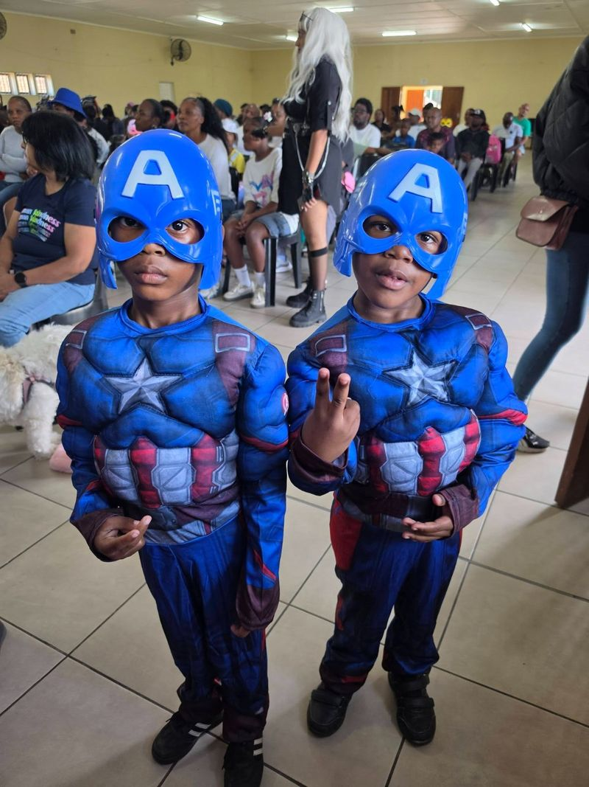
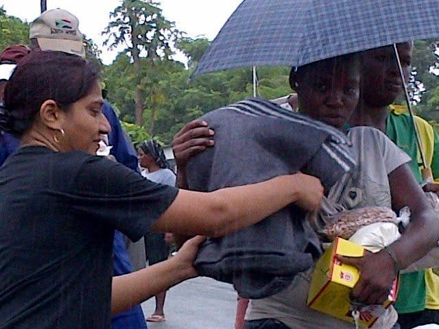
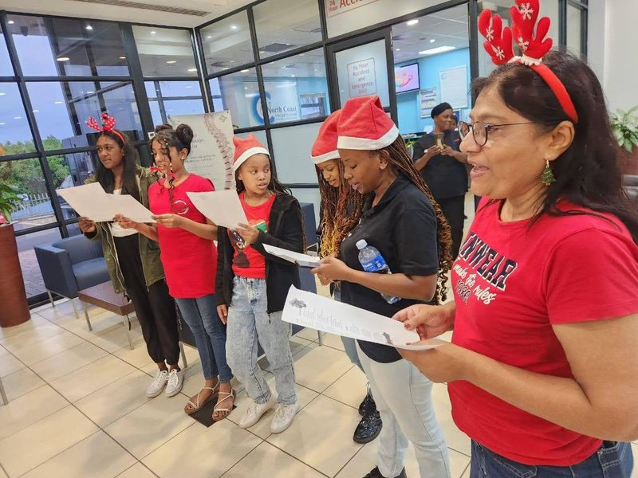
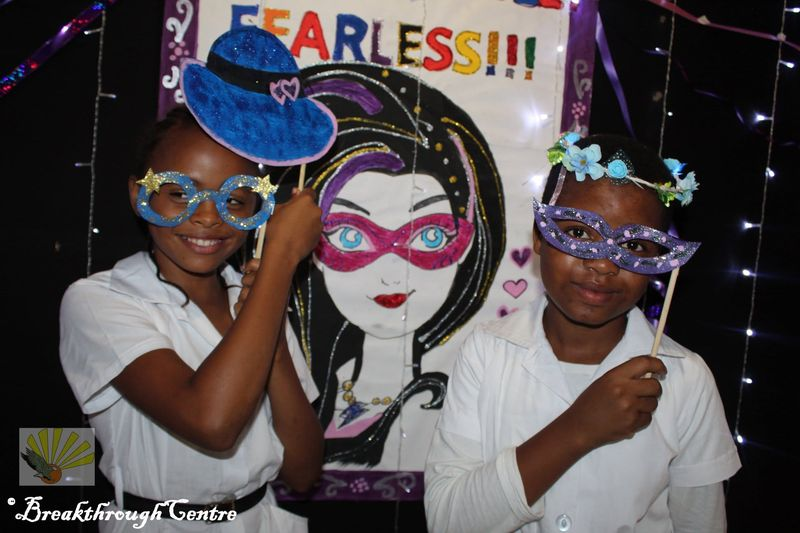
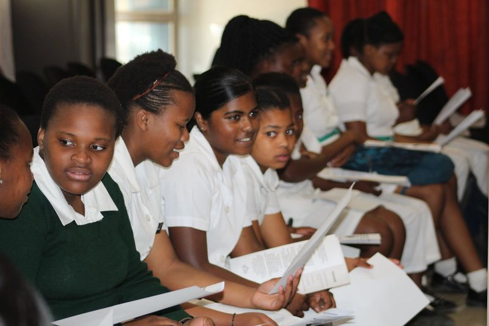
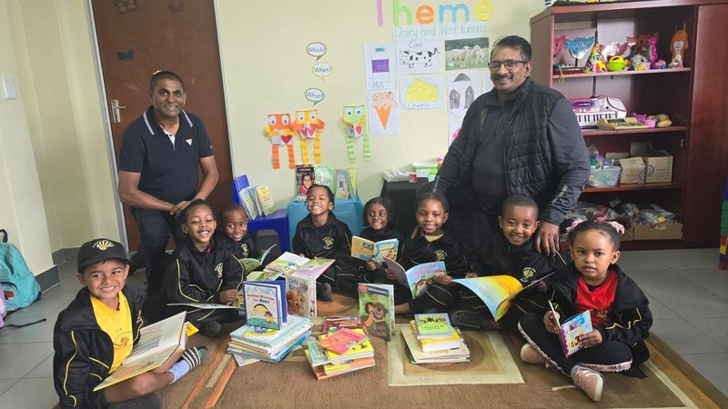
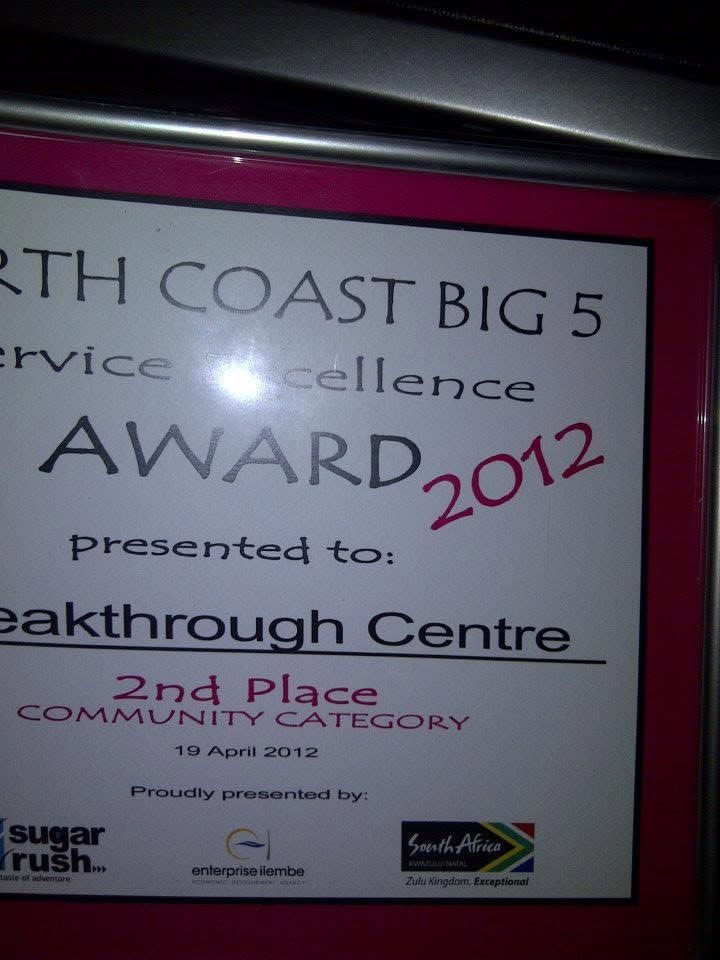

Community projects
For 36 years we've shown up for Etete and the wider KwaDukuza community: marching for children's safety, carrying blankets and food parcels to families in the rain, and filling Christmas with carols and gifts.
Child protection is everyone's business
Every year we host a Child Protection event with local schools and organisations: a clear call for our communities to stand together against child abuse, domestic violence and human trafficking. Our Academy learners lead the Every Child Has a Voice campaign and carry its message to the community.
In June 2026 families packed the hall for this year's event, and plenty of our little ones came dressed as their favourite superheroes. Ps Trevor and Jessica Nair's invitation was simple: let communities unite to protect our future leaders.
In earlier years our learners, volunteers and a few brave clowns marched through the streets of Etete with home-made placards and slogans like "It shouldn't hurt to be a child".

Standing up for children, in pictures
Tap a photo to see it bigger.
Safety tips for parents and caregivers
The danger of trafficking and kidnapping affects every community. We put these tips together for parents in Etete and KwaDukuza. Please share them with other parents, caregivers and schools.
- Have a trusted person drop off and fetch your child when you can't, and arrange for someone to meet them if they walk part of the way home.
- Encourage children to walk home from school in groups, and to lock gates and doors if they're home alone.
- Agree that you'll never change pick-up plans without telling your child first, so "your mum sent me to fetch you" is never a reason to go with someone.
- Practise what to do if someone grabs them, and teach them emergency numbers.
- Teach children not to accept sweets or treats from strangers.
- If you work, consider an aftercare facility or a library where your child can wait safely.
- Know what your child does online and on devices, and set clear boundaries.
- Teach sons to respect girls and their boundaries, and daughters likewise. Discipline starts at home.
- Name a teacher or trusted adult your child can go to in an emergency, and speak well of police and safety officers so your child will trust them.

Practical help when it's needed most
- Blankets and food parcels: in keeping with Isaiah 58:7, our team has carried blankets and food parcels to elderly and needy neighbours in Etete, even in pouring rain.
- Feeding schemes: meals for hungry children, from our feeding programmes in 2013 to the plates of food shared at Kidz Club today.
- Gift boxes and school shoes: gift boxes for a hall full of children in August 2014, and new school shoes for learners in partnership with Lotus FM.
- Mums and babies: diapers for babies, and clothing and linen for their mums.
- Hospital visits: visiting sick children and babies in hospital and bringing them gifts.
- Relief in hard times: hot meals during Covid-19, food hampers for families, and baby formula from Durban to Tugela during the 2021 unrest in KZN.
- Jumpstart: work-readiness training that prepares young people for their first jobs.
Outreach through the years
Tap a photo to see it bigger.
Christmas cheer
Our team has taken Christmas carols to patients and staff at Alberlito Hospital in Ballito. At Kidz Club, Christmas has meant a chicken breyani lunch, cooldrinks, party packs and a gift for every child, made possible by friends of the centre.


Girls' health and hygiene
Our girls' health and hygiene programme gives schoolgirls the knowledge and confidence to look after themselves, and reminds them of their worth. The signs they held up say it all: Fearless. Dream Big. I am Enough.
Investing in local schools
Tomorrow's leaders are sitting in today's classrooms, so we invest in local public schools. Our programmes bring teachers, parents, officials and everyone with a stake in education around the same table. In 2026 Jessica Nair ran parent workshops and spoke at the Boys Talk and Girls Talk sessions at Radha Roopsingh Primary School. See our training work.
Potential Unleashed: contests and performances
Our inter-school contests in art, poetry and talent help young people find out what they're good at. Children get a stage, an audience and skills that can shape their future. Even during the pandemic we kept the contests going online.


Friends who make it possible
None of this happens alone. Thank you to everyone who has stood with us, including:
- Sasko, for netball hoop stands and soccer goal posts
- Prince's Grant Bookclub, for library books for the Academy
- Lotus FM, for partnering with us on school shoes
- Bethel Baptist Church, who ministered to our children and served them a meal
- Metro World Child South Africa and Umhlali SAPS, who spoke to our children
- The Friends of the Kidz Club and every family who sponsors meals, treats and gifts
Recognised for community development
On 19 April 2012 Breakthrough Centre won 2nd place in the community category of the North Coast Big 5 Service Excellence Awards. We've also been honoured with 1st place in the KwaDukuza Municipality Mayoral Awards for Community Development, a Nedbank Heroes Award and the Lubners "Inhouse Club" National Heroes Award. Read our story.

Partner with us
Schools, businesses, churches and individuals work with us on outreach, events and relief. Let's talk.
Community questions
Does Breakthrough Centre help families in need in KwaDukuza?
Yes. Over the years we've handed out blankets, food parcels, hot meals, school shoes, gift boxes and baby formula to families in Etete and across KwaDukuza. If you know of a family in need, WhatsApp 081 775 1488.
When is the Child Protection event?
We host it every year with local schools and organisations. The date is announced on our Facebook page, and children and parents are welcome.
Can my business, school or church partner with you?
Please do. Businesses, schools, churches and individuals have sponsored meals, books, sports equipment, school shoes and gifts. WhatsApp 081 775 1488 and let's talk.